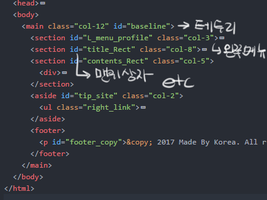
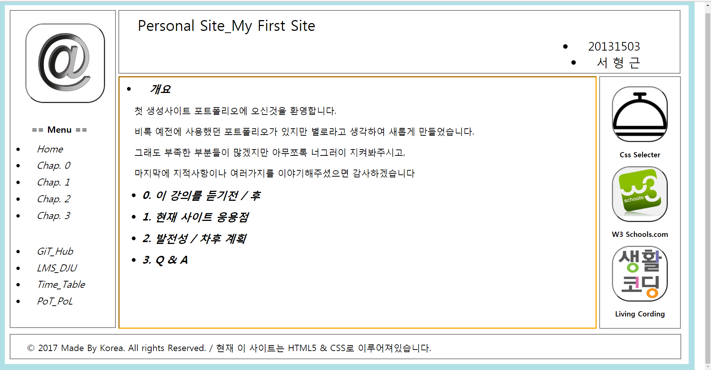
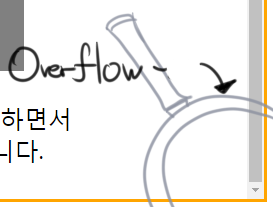
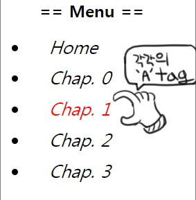

Personal Site_My First Site
1.1 - 사이트 비율을 정하기 위해 크기 단위를 em으로 결정
최대한 사이트를 줄이고 늘렸을경우를 인지하여 em을 사용하였습니다.
다만 아쉬운점은 반응성웹을 사용하지 못하여 모바일같은 작은 화면에는 사용하지 못하였습니다.
1.2 - 대부분 section으로 배치하여 현재의 화면을 만들었습니다.
 
실습시간에 배운 시멘틱을 사용해서 만들자니 생각한 구도가 나오질 않아,
section을 끼워맞춰서 현재 사이트를 만들었습니다.
중간중간에 배치를 위해 사용한 것으로는, css의 [ float: left; ] 를 사용하였고
그 결과로 현재 홈페이지의 배치를 왼쪽으로 차분하게 쌓아갈수 있었습니다.
1.3 - 사이트의 주 내용이 담겨있는 부분의 overflow를 통한 출력

사이트의 메뉴들을 고정시키고 내리는 방법을 모르기때문에
아쉽게도 a태그를 사용한 중복 사이트들이 만들어지게 되었으며,
중복 사이트들의 갯수를 줄이려면 내용이 초과 되었을때 overflow 를 사용하여 아래로 내리는것이 좋다고 생각하였습니다.
1.4 - a(anchor)태그를 통한 화면전환

위의 1.3번에도 이야기를 드렸겠지만, 해당 사이트의 화면을 이동하기 위해 a태그를 사용하게 되었습니다.
해당 사진에 나와있는 왼쪽의 메뉴들을 누르게 되면 틀만 같고 안의 내용이 다른 사이트들을 경유하면서 이동하게 만들었습니다.